Bölgenin en dikkate değer eserlerinden birisidir. İlçe merkezinin 15 kilometre güneyinde, Fırtına Deresi’nin batı yamaçları üzerine kuruludur. Kalenin üzerinde inşa edildiği sarp kaya kütlesi denizden 750 metre, dere yatağından yaklaşık 100 metre yüksekliktedir. Kale; dış surlar, orta surlar ve iç kaleden meydana gelir. Dış kalenin kapısına kuzeybatı yönündeki patika bir yolla ulaşılır. Bir teras yardımıyla orta surlar seviyesine çıkılır. Buradan ikinci bir kapı yardımıyla kale içerisine girilir. Orta kale içerisinde üç önemli yapı bulunur. Bunlar muhafız binası, şapel ve baş kuledir. Kulenin dört katlı olduğu duvarlardaki hatıl izleri ve kiriş deliklerinden anlaşılmaktadır. Duvarlar üzerinde doğu (vadi, manzara) yönünde kemerli pencereler, diğer taraflarda mazgal delikleri bulunmaktadır.
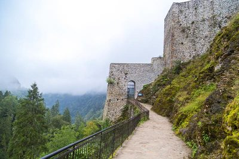 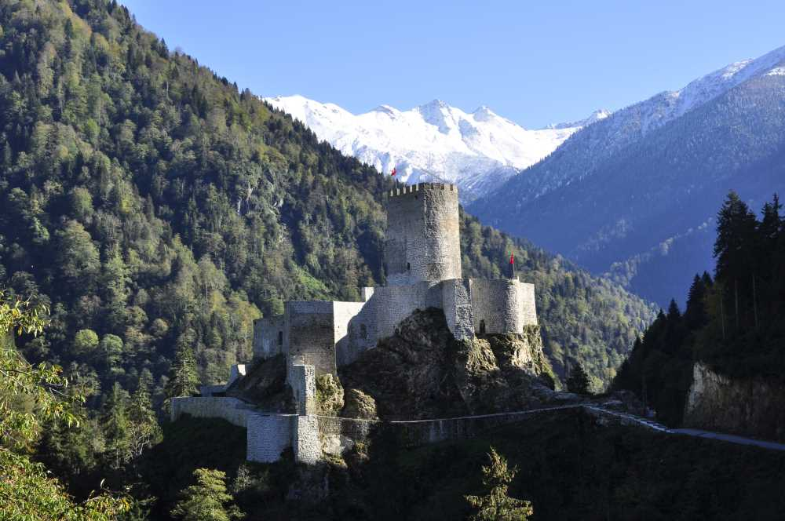 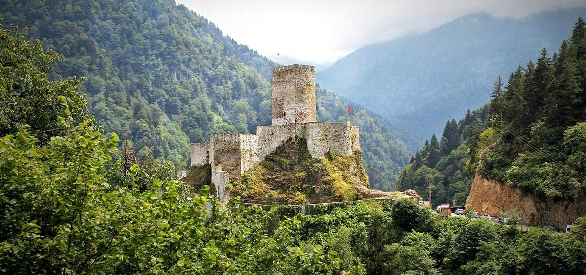Rize'nin Çamlıhemşin İlçesi'ne 16 kilometre uzaklıkta bulunan ve bir bölümü Erzurum ve Artvin illerine kadar uzanan milli park, Doğu Karadeniz Dağları’nın 3 büyük dağ kütlesi Üçdoruk (Verçenik), Göller (Hunut) ve Kaçkar dağlarından oluşmuştur. Park içerisinde 9 adet Köy, 33 adet yayla yerleşimi bulunmaktadır. 1994 yılında milli park ilan edilmiştir.
 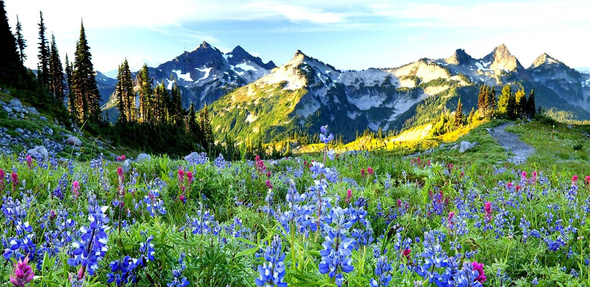
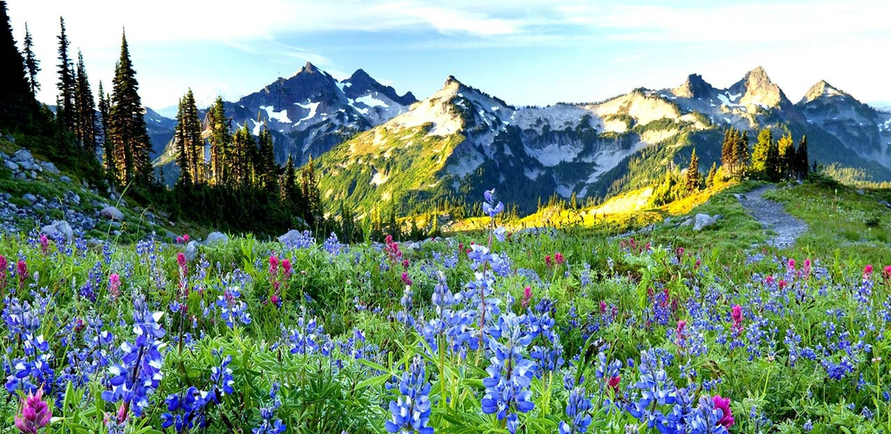

Fırtına Deresi veya eski adıyla Peruma, Doğu Karadeniz'de yer alan akarsulardan birisi olup, Kaçkar Dağları'nın Karadeniz'e bakan yamaçlarındaki derelerin birleşmesi ile oluşmuştur. Rize Ardeşen'in yaklaşık 2 km batısında Karadeniz'e dökülen Fırtına Deresi, 68 km uzunluğundadır.
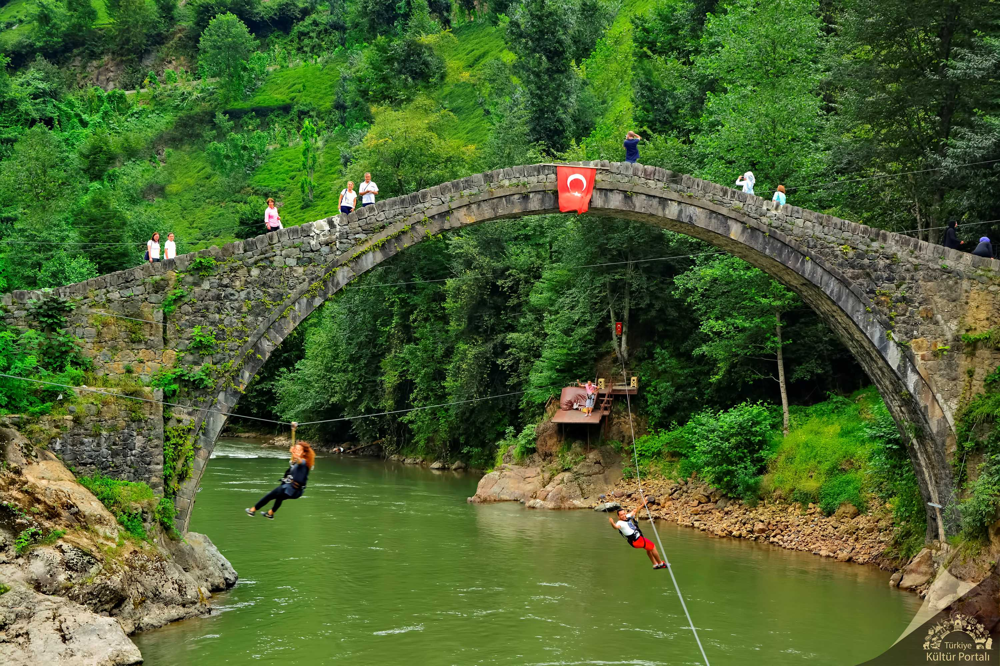 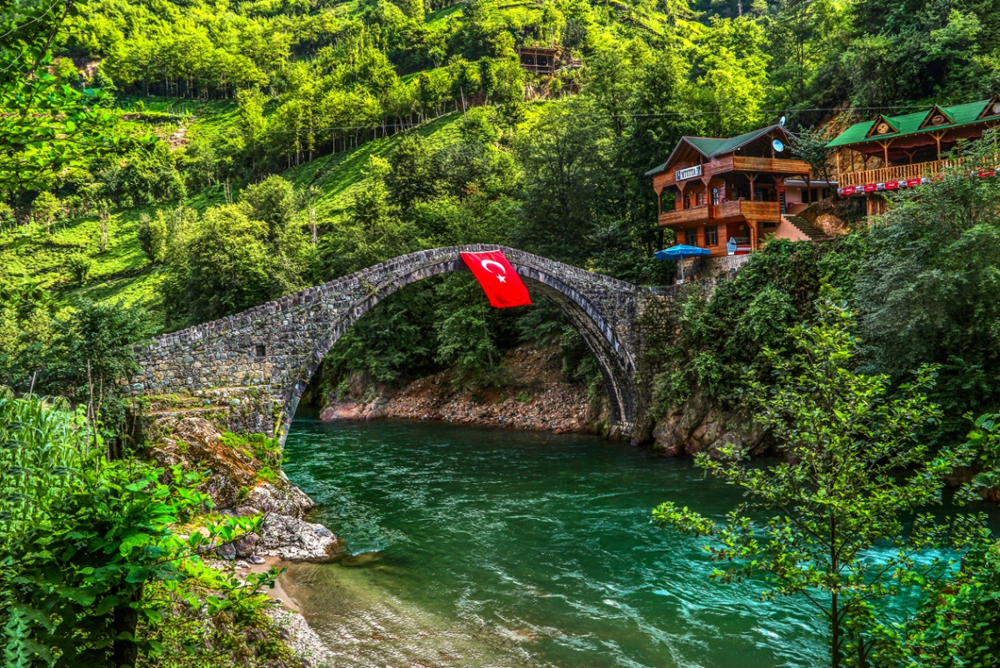 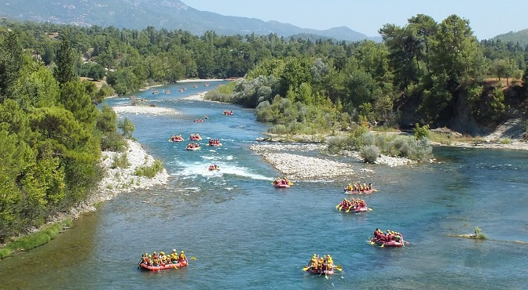Genellikle konak türünden oluşan Hemşin Evleri, taş malzeme işlenerek inşa edilmiş 3 katlı yapılardan meydan geliyor. Üst kısımları ahşap işleme olan Hemşin Evleri’nin bazılarında, alt katlarda taş işlemeler kullanıldığı fark ediliyor. Kimi evlerin üst katları ise dolma taş tekniğiyle ahşap arasına taş doldurmak sureti ile yapılmış. Ahır bölmesi taştan yapılan bazı evlerin üst katları ise ahşap malzeme ile boğaz geçme tekniği tatbik edilmek suretiyle imal edilmiş. Mutfak bölümleri de, ateşin yakılabileceği yontma taşlarla işlenmiş ve kemer bağlantılar ile dumanın dışarıya atılmasını sağlayan baca teknikleri kullanılmış. Tüm bunların yanı sıra Hemşin Evleri’nde, ev halkının oturması, yemek yemesi bir için avlu, evin yiyecek ihtiyaçlarının depolandığı maran ismi verilen bir ambar, misafir ağırlamak için düzenlemiş baş oda, bu odalarda şömine, banyo ve tuvalet yer alıyor. Ahşap yapı tekniği uygulanan bu sistemlerde kapı ve menteşeler dışında hiç çivi kullanılmamış. Oyma sanatının en ince teknikleri, kapı, pencere ve köşe bağlantılarında ahşap ev ustaları tarafından titiz bir şekilde uygulanmış. Hemşin Evleri’ni yapan bu ustalar, yer ve malzeme seçimi, evin bitirilip teslimine kadar tüm sorumluluğu üstlerine almışlar. Tüm bu özellikleri ile Hemşin Evleri, günümüzde ve gelecekte korunması gereken en önemli kültürel değerler arasında yer alıyorlar.
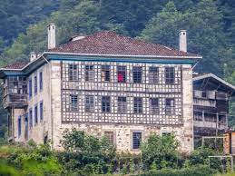

Rize - Atatürk Müzesi, Osman Mataracı'ya ait tarihi evde, 1984 yılında düzenlenmiş ve ziyarete açılmıştır. Atatürk, 1924 yılı Eylül ayında "Atatürk'ün Sonbahar Gezisi" olarak bilinen birkaç ay süreli bir geziye çıkmış, bu gezi sırasında Karadeniz illerini ziyaret etmiştir. İşte bu gezi günlerinde Atatürk, beraberinde eşe Latife Hanım, birkaç milletvekili olduğu halde 17 Eylül 1924 gürü Trabzon'dan Hamidiye Vapuru ile Rize'ye gelmiş, Rize de coşkun gösterilerle karşılanmıştır. O geceyi Rize'de Mataracı Mehmet Bey'in evinde geçiren Atatürk, ertesi günü şehirde bazı ziyaretlerde bulunmuş, incelemeler yapmış, saat 16.30'da ayni vapurla Giresun'a hareket etmiştir. Rize'de Atatürk'ün bir gece konuk olduğu ev, daha sonra sahibi Mehmet Mataracı'Dan yeğeni Osman Mataracı'ya geçmiştir. Atatürk'ün 100. Ölüm yıldönümü dolayı sile Atatürk Müzesi yapılmak üzere, Osman Mataracı evini Rize Özel İdaresine bağışlamıştır. 1984 yılında Kültür Bakanlığına devredilen ev, onarılarak Atatürk Müzesi halinde düzenlenmiş ve ziyarete açılmıştır. Evin bir bölümü de Kültür Merkezidir. Çatısı ile birlikte 3 katlı olan ev 1902 yılında Mataracı ailesi tarafından yaptırılmıştır. Bu günkü düzenlemeye göre evin üst katı Atatürk Müzesi'dir. Atatürk'ün Rize gezileri, kullandığı eşyalar, Atatürk fotoğrafları, Milli Mücadele yallarında Rize'de Kuvay-ı Milliye iler gelenlerinin fotoğrafları bu bölümde sergilenmektedir. Müzenin alt bölümü idare odaları ve Kültür Merkezine ayrılmıştır.
 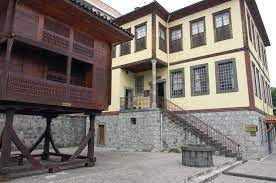
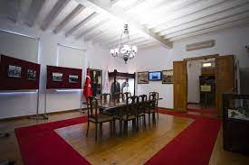
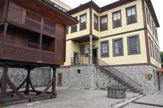
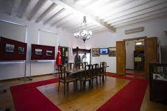